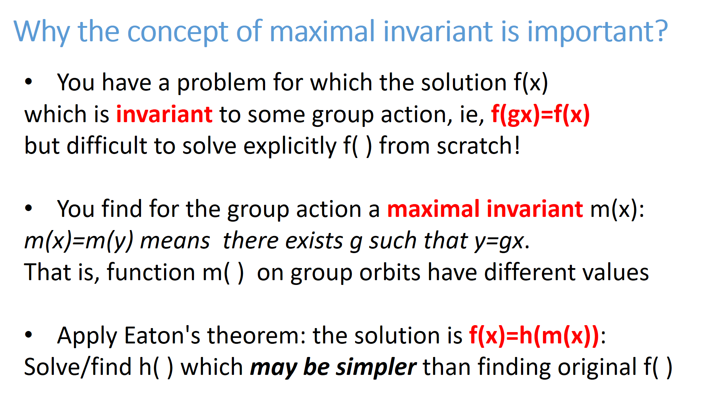
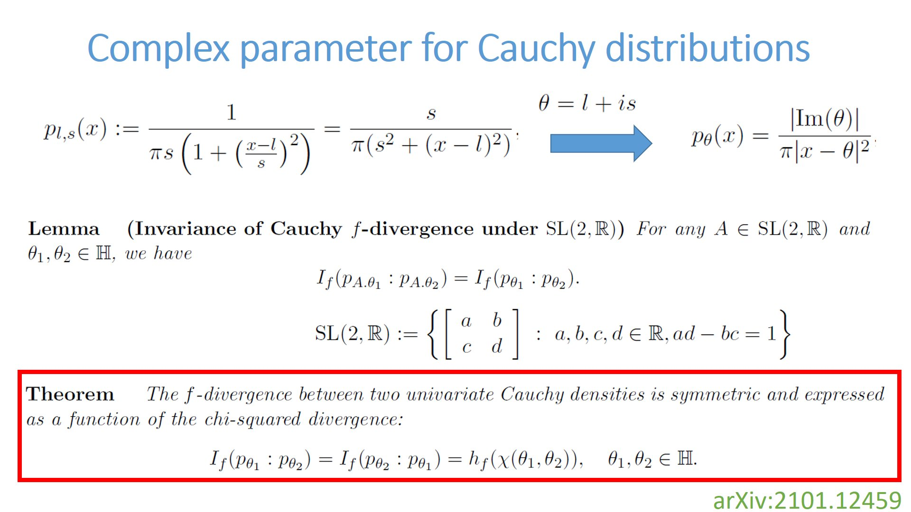
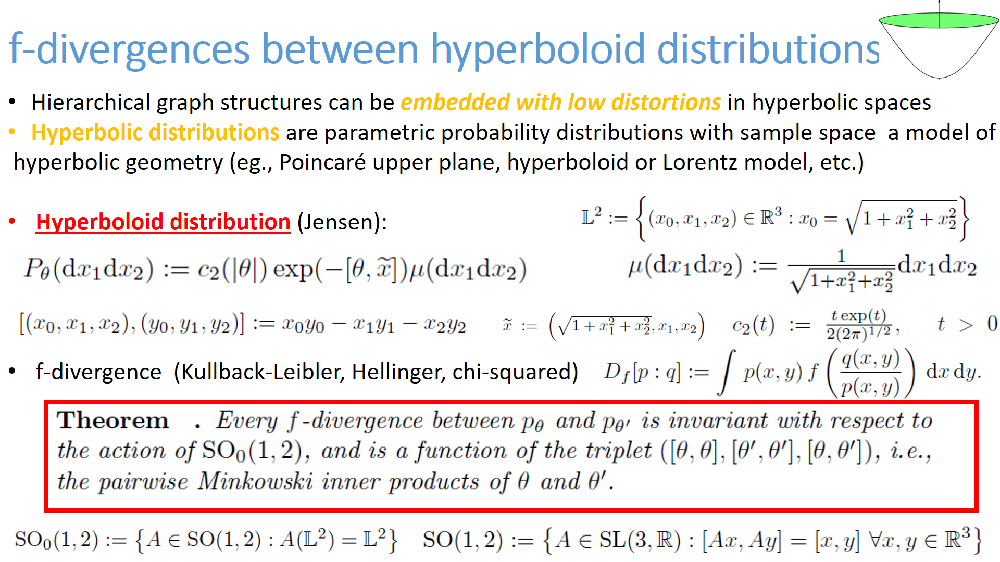
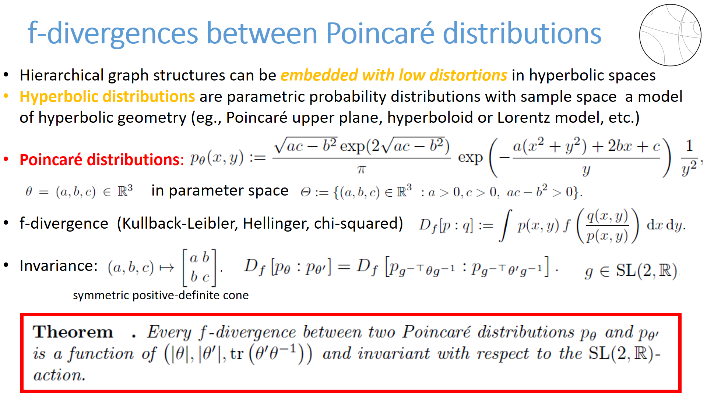

Maximal invariant
Consider a group G and an action of the group on a set X: y=gx.
A function f(x) on X is invariant under the action of the group if f(gx)=f(x),
and a maximal invariant function m is an invariant function such that m(x)=m(y)
if and only if there exists g in G such that y=gx.
Eaton's theorem (Theorem 2.3 in Eaton, Morris L. "Group invariance applications in statistics" IMS, 1989)
states that all invariant functions f can be expressed as functions of a maximal invariant function m:
f(x)=h(m(x)).

We applied the framework of maximal invariant to study invariant divergences in statistics:
- The chi-squared divergence is a maximal invariant for the group action of
linear fractional transformations of SL(2,R) on Cauchy distributions.
Since the chi-squared divergence between Cauchy distributions is symmetric,
we deduced that all f-divergences between Cauchy distributions are symmetric and
expressed as a scalar function of their chi-squared divergence.

See On f-Divergences Between Cauchy Distributions
(IEEE Trans Information Theory, 2023) also on arxiv:2101.12459
- The triplet of pairwise Minkowski inner products of parameters of hyperboloid distributions
is a maximal invariant for the action of group SO0(1,2).
Since f-divergences between hyperboloid distributions are also invariant by the action,
we deduce that all f-divergences between hyperboloid distributions are functions of 3 canonical terms.

See On the f-divergences between hyperboloid and
Poincaré distributions (GSI'23, technical report: 2205.13984)
- The determinant and trace involving the 2x2 SPD matrix parameter
of Poincaré distributions is a maximal invariant for the congruence action of SL(2,R).
Since f-divergences between Poincaré distributions are also invariant under the action, we deduce that all f-divergences
between Poincaré distributions are expressed using the 3 canonical terms.

See On the f-divergences between hyperboloid and
Poincaré distributions (GSI'23, technical report: 2205.13984)
More to come soon!